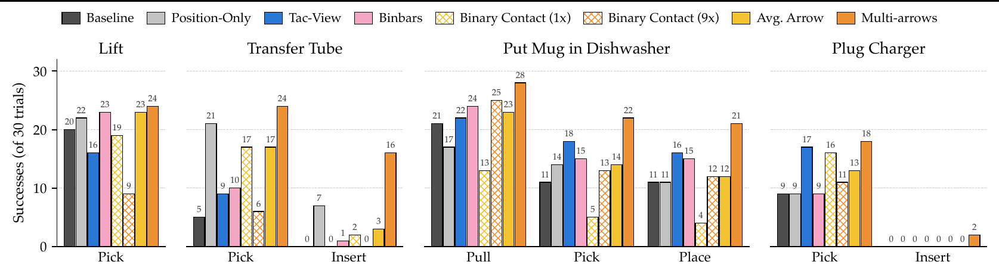
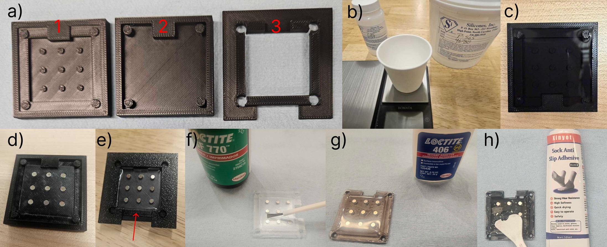
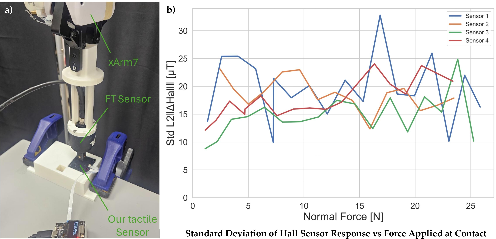
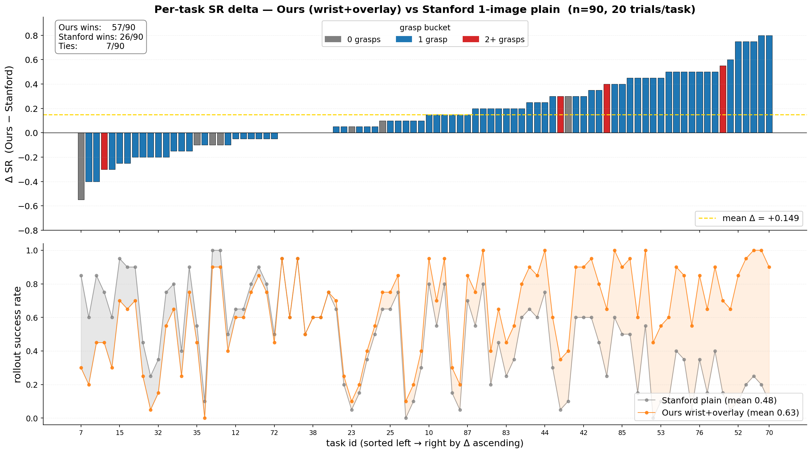

Visible Touch: Rendering Contact for Visuomotor Policies
University of California, Los Angeles
* Equal contribution
Accepted to CoRL 2026
Abstract
Integrating contact information into visuomotor policies remains an open problem. Touch is essential to robust manipulation, yet most modern policies, including pretrained vision-language-action (VLA) models, operate from vision and proprioception alone. Existing approaches to closing this gap require specialized tactile hardware, add separate tactile encoders, or commit to non-image policy backbones, all incompatible with the modern paradigm of image-conditioned policies built on pretrained 2D visual representations. Our key insight is that the bottleneck is not the contact information itself, but how it is delivered: when contact signals are exposed in the same spatial frame as the scene the policy already attends to, they become directly usable by any image-conditioned policy without architectural changes. We operationalize this insight in Visible Touch, paired with a custom low-cost magnetic contact sensor that is open-sourced and fabricated from off-the-shelf parts via a parametric CAD-to-mold pipeline. Across the LIBERO benchmark, Visible Touch improves BC-Transformer success by 15.7 percentage points on average in the 2-view setting, with similar gains in the 1-view setting; controlled comparisons show that the contact-integration strategy strongly affects how effectively tactile information is used. The pattern holds when fine-tuning pretrained VLAs: miniVLA on LIBERO gains 25 percentage points on average, and π0.5 on four real-world contact-rich tasks gains 30 percentage points with our custom sensor.
Keywords: Imitation Learning; Contact-Rich Manipulation; Tactile Sensing; Vision-Language-Action Models; Visual Overlays
Sample Policy Rollouts (3x Speed)
The clips below show successful π0.5 rollouts on the real-world tasks and the corresponding contact-overlay renderings used by Visible Touch. Overlay videos make the tactile signal visible in the same RGB frame consumed by the policy. Multi-arrows renders one arrow per taxel (9 per finger), Avg. Arrow renders a single per-finger arrow, and Binbars renders a bar of height proportional to the per-finger contact magnitude at a fixed image location. Tac-View is the separate-stream baseline.
Lift
Multi-arrows Overlay
Put Mug in Dishwasher
Rollout Success
Multi-arrows Overlay
Avg. Arrow Overlay
Binbars Overlay
Tac-View (separate image stream)
Transfer Tube
Rollout Success
Multi-arrows Overlay
Plug Charger
Rollout Success
Multi-arrows Overlay
Method
Visible Touch has two coupled components: a rendering pipeline that projects per-element contact measurements onto the policy's RGB observations as a spatial overlay, and a low-cost magnetic tactile sensor that drives the pipeline on real hardware. The rendering pipeline is sensor-agnostic: it operates on raw per-element 3-axis measurements (simulated contact forces or raw magnetic flux deflections) without calibration to physical force units. Each sensing element is projected into camera coordinates using the robot's live forward kinematics and calibrated camera parameters, then alpha-blended onto the image as an arrow anchored at its projected position. The wrist-camera extrinsic is updated each timestep from the robot's joint configuration; the external-camera extrinsic is calibrated once offline. Screen-space arrow length reflects both measurement intensity and perspective foreshortening at the element's depth, giving a depth-consistent cue. Projected position markers are rendered even when the measurement is zero, and distinct per-finger colors (left finger cyan/blue, right finger magenta/red) let the policy recover finger identity from color alone.
The scale factor is tuned once per sensor source so that typical contact events produce visible arrows; no further force calibration is required. Because the augmented image preserves the original resolution, channel count, and pixel range, no additional tactile encoder, state vector dimension, or policy architecture change is required. The same pipeline transfers unmodified across three policy families: BC-Transformer, miniVLA, and π0.5.
Overlay variants. We study three variants spanning a granularity spectrum. Multi-arrows renders one arrow per sensing element, preserving spatial structure at the cost of visual clutter. Avg. Arrow renders a single per-finger arrow at the projected finger center using the per-finger aggregate. Binbars discards both location and direction, rendering a vertical bar of height proportional to the per-finger magnitude at a fixed image location, isolating whether the policy uses the overlay as a directional cue or as a contact-event signal.
Contributions.
- Visible Touch: an image-space contact-overlay method that drops into any image-conditioned policy with no architectural changes and no force calibration. The same pipeline transfers unmodified across three policy families (BC-Transformer, miniVLA, π0.5).
- A low-cost, open-source magnetic contact sensor and parametric CAD-to-mold pipeline that generates 3D-printable molds from user-specified geometry. The sensor costs under $5 in elastomer and magnet parts (under $50 assembled) and is validated end-to-end on four real-world contact-rich tasks with π0.5.
- A characterization of when and how contact overlays help: gains scale with task headroom and grasp structure, peaking on multi-grasp long-horizon tasks; image-space delivery outperforms a compact state-vector baseline and information-matched separate-stream alternatives; and optimal overlay granularity matches the spatial consistency of the underlying contact.

Figure 1: Overview of Visible Touch. A low-cost magnetic contact sensor captures per-taxel contact, which we render as an image-space overlay on the policy's RGB observations. The augmented images are drop-in inputs for fine-tuning pretrained VLAs, requiring no architectural changes. Contact overlays improve average task success by +25.3pp on LIBERO fine-tuning suites and +30.3pp on real-world contact-rich manipulation tasks.
Key Findings
Experiments are designed around three research questions. Q1: Does Visible Touch improve visuomotor policy performance, and does the improvement transfer across architectures? Q2: How does image-space contact rendering compare with alternative contact-integration strategies? Q3: When and how do overlays help most?
Q1. Image-space contact improves BC-Transformer across camera settings.
Setup. We use all four LIBERO suites. Since LIBERO exposes no native tactile observations, we extract per-contact force vectors from the MuJoCo contact array (filtered to gripper-finger geometries) as the per-element measurements. BC-Transformer is trained in the multitask configuration with 3 seeds, evaluating final-epoch checkpoints with 20 rollouts per task. We compare three input conditions: Plain (LIBERO's default RGB with 8-D proprioception), Proprio (Plain plus a 12-D contact wrench concatenated to the state), and Visible Touch (Plain plus our image-space overlay; default Avg. Arrow), in both 1-view (agentview) and 2-view (agentview + wrist) configurations.
In LIBERO simulation, Visible Touch outperforms the plain baseline in every suite and both camera configurations. In 2-view, Visible Touch adds +15.7pp on average (+33.7pp on LIBERO_LONG); 1-view shows the same pattern (+12.5pp average), confirming the benefit does not require a wrist camera. The wrist camera and the overlay are complementary rather than substitutable: adding the wrist alone yields modest gains (+4.1pp average, -7.9pp on OBJECT), while wrist-plus-overlay is best on every suite; Visible Touch benefits from the wrist camera on every suite (+7.3pp average, including +3.2pp on OBJECT).
| Suite | 1-view (agentview) | 2-view (agentview + wrist) | |||
|---|---|---|---|---|---|
| Plain | Visible Touch | Plain | Proprio | Visible Touch | |
| OBJECT | 90.7 ± 4.4 | 95.0 ± 0.9 | 82.8 ± 7.0 | 80.0 ± 2.0 | 98.2 ± 1.2 |
| GOAL | 79.3 ± 3.2 | 91.7 ± 0.3 | 86.8 ± 4.1 | 81.5 ± 4.3 | 92.8 ± 2.5 |
| SPATIAL | 79.0 ± 2.0 | 90.5 ± 0.4 | 84.8 ± 4.0 | 80.0 ± 1.4 | 92.3 ± 2.7 |
| LONG | 41.8 ± 6.1 | 63.8 ± 1.2 | 52.8 ± 2.1 | 42.8 ± 5.1 | 86.5 ± 2.3 |
| Average | 72.7 | 85.2 | 76.8 | 71.1 | 92.5 |

Figure 3: BC-Transformer on LIBERO across camera configurations (n=3 seeds, error bars are std). Orange bars show Visible Touch (ours); gray bars show plain baselines; blue bars show the Proprio baseline that receives an aggregated 12-D contact wrench through the proprioceptive state. Visible Touch consistently improves over plain images in both 1-view and 2-view, with the largest gain on LIBERO_LONG (+33.7pp 2-view).
Q2. Image-space delivery outperforms a compact state-vector baseline.
The Proprio baseline concatenates an aggregated 12-D contact wrench to the proprioceptive state. In the 2-view setting, Visible Touch exceeds Proprio by +21.4pp on average, with the largest gap on LIBERO_LONG (+43.7pp). Notably, Proprio underperforms the plain 2-view baseline on every suite (-5.7pp on average), suggesting that direct concatenation of contact information to the state vector is a relatively weak integration strategy in this setup (-2.8pp OBJECT, -5.3pp GOAL, -4.8pp SPATIAL, -10.0pp LONG; it even trails the 1-view plain baseline, 71.1% vs. 72.7%). Overlays also stabilize training: Visible Touch 2v has a median cross-seed SD of 2.4% versus 4.1% for plain 2v and 3.2% for Proprio. This comparison does not establish superiority over learned tactile encoders or other feature-level fusion mechanisms.
Q1. The same pattern transfers to miniVLA.
For miniVLA (Qwen2.5 0.5B backbone, DINOv2 + SigLIP encoders at 224 px), we pretrain from scratch on LIBERO_90 (vs. the publicly released minivla-libero90-prismatic baseline) and separately fine-tune the pretrained model on each suite with and without overlays. Our overlay-pretrained miniVLA reaches 63.2% on LIBERO_90 versus 48.3% for the released Stanford checkpoint evaluated in the matched single-image, no-chunking configuration (+14.9pp, 90 tasks × 20 trials). Suite-level fine-tuning yields a +25.3pp average gain (+34.1pp on LIBERO_LONG), raising the average from 50.9% to 76.2%.
| Method | Pretraining | Fine-tuning | ||||
|---|---|---|---|---|---|---|
| LIBERO_90 | OBJECT | GOAL | SPATIAL | LONG | Avg. | |
| Baseline | 48.3% | 51.0% | 48.5% | 71.5% | 32.5% | 50.9% |
| Visible Touch | 63.2% | 70.6 ± 4.6% | 80.5 ± 4.3% | 87.0 ± 1.8% | 66.6 ± 2.2% | 76.2% |
Additional miniVLA comparison: Under the VQ-h8 + history-2 architecture used for the headline LIBERO_90 result in the original miniVLA work, fine-tuning the released checkpoint on contact-overlay LIBERO_90 data reaches 86.3% mean success (10 trials per task), while the released checkpoint obtains 72.2% under the identical evaluation pipeline (+14.1pp; the original work reports 82% on its own harness). Contact overlays remain effective under a different miniVLA architectural configuration.
Q3a. Overlay benefit scales with task headroom and grasp structure.
For BC-Transformer, the per-task improvement across all 40 LIBERO tasks (2-view) correlates strongly with task headroom (r = 0.924, p < 10-3): overlays help most where vision-only performance is lowest. Bucketing tasks by gripper-close events reveals the same pattern through task structure: multi-grasp tasks (n = 7) show +43.3pp. After controlling for headroom, contact-event count (r = -0.571) and trajectory length (r = -0.368) retain independent predictive power. The grasp-structure pattern replicates on miniVLA across the 90 LIBERO_90 tasks: 1-grasp tasks (n = 78) show +17pp and 2+-grasp tasks (n = 4) show +23.8pp.


Figure 4: Success rates of Visible Touch (Avg. Arrow overlay) over plain baselines, bucketed by gripper-close events. Tasks with no grasps show no benefit; single-grasp tasks show modest gains; multi-grasp tasks show the largest gains. The pattern holds across both BC-Transformer (a) and a pretrained miniVLA on LIBERO_90 (b).
Q3b. Overlay granularity has a non-monotonic optimum in simulation.
The coarser Binbars representation is competitive with the default Avg. Arrow, matching it within noise on three suites and falling behind only on LIBERO_LONG (-7.7pp). The finer Multi-arrows representation underperforms Avg. Arrow, with the largest deficit on LIBERO_LONG (-10.3pp). An intermediate level of detail (per-finger averaging) outperforms both coarser bars and finer per-contact-point arrows, suggesting that excess spatial detail can introduce visual clutter when simulated contacts appear at inconsistent mesh locations. The optimum reverses in the real world (below).
| Visible Touch variant | OBJECT | GOAL | SPATIAL | LONG | Avg. |
|---|---|---|---|---|---|
| Multi-arrows | 94.3 ± 5.6 | 91.8 ± 0.5 | 90.2 ± 1.0 | 76.2 ± 2.7 | 88.1 |
| Avg. Arrow | 98.2 ± 1.2 | 92.8 ± 2.5 | 92.3 ± 2.7 | 86.5 ± 2.3 | 92.5 |
| Binbars | 98.0 ± 0.9 | 92.7 ± 1.7 | 94.5 ± 1.5 | 78.8 ± 2.6 | 91.0 |
Q1. Visible Touch transfers to real-world contact-rich manipulation.
We fine-tune π0.5 (pi05_droid checkpoint, 2.3B) with LoRA on two image views and compare eight input conditions on four contact-rich tasks, 30 trials per condition, scored at the sub-task level. Visible Touch improves over the Baseline on nearly every sub-task, with Multi-arrows strictly outperforming Baseline everywhere. The largest gains appear on multi-stage tasks: on Transfer Tube, Multi-arrows reaches 24/30 on Pick (vs. 5/30) and 16/30 on Insert (vs. 0/30); on Put Mug in Dishwasher, the three stages improve by 7, 11, and 10 trials; on Plug Charger (the hardest task), Multi-arrows is the only condition that completes any Inserts (2/30) and doubles Baseline success on Pick (18/30 vs. 9/30). The simpler Lift task shows a more modest gain (24/30 vs. 20/30). Macro-averaged across tasks, Multi-arrows improves over Baseline by +30.3pp.


Figure 5: Real-world experimental setup. (a) Contact-rich manipulation tasks: Lift, Transfer Tube, Put Mug in Dishwasher, and Plug Charger. (b) Example contact overlays rendered onto external and wrist camera views.

Figure 7: Real-world evaluation of π0.5 fine-tuning across four contact-rich manipulation tasks (successes out of 30 trials per condition, sub-task scored). Final-stage success corresponds to complete end-to-end task success. Hatched bars denote the binary ablations of the matching solid variant: Binary Contact (1x) and (9x) keep only per-finger and per-taxel contact occurrence, respectively.
| Method | Lift | Transfer Tube | Put Mug in Dishwasher | Plug Charger | ||||
|---|---|---|---|---|---|---|---|---|
| Pick | Pick | Insert | Pull | Pick | Place | Pick | Insert | |
| Baseline | 20/30 | 5/30 | 0/30 | 21/30 | 11/30 | 11/30 | 9/30 | 0/30 |
| Tac-View | 16/30 | 9/30 | 0/30 | 22/30 | 18/30 | 16/30 | 17/30 | 0/30 |
| Position-Only | 22/30 | 21/30 | 7/30 | 17/30 | 14/30 | 11/30 | 9/30 | 0/30 |
| Visible Touch: Binbars | 23/30 | 10/30 | 1/30 | 24/30 | 15/30 | 15/30 | 9/30 | 0/30 |
| Visible Touch: Binary Contact (1x) | 19/30 | 17/30 | 2/30 | 13/30 | 5/30 | 4/30 | 16/30 | 0/30 |
| Visible Touch: Avg. Arrow | 23/30 | 17/30 | 3/30 | 23/30 | 14/30 | 12/30 | 13/30 | 0/30 |
| Visible Touch: Binary Contact (9x) | 9/30 | 6/30 | 0/30 | 25/30 | 13/30 | 12/30 | 11/30 | 0/30 |
| Visible Touch: Multi-arrows | 24/30 | 24/30 | 16/30 | 28/30 | 22/30 | 21/30 | 18/30 | 2/30 |
Component ablations. Position-Only, which renders the projected markers without contact information, improves over the plain baseline on several stages, most notably Transfer Tube, indicating that geometrically registered visual markers themselves provide useful end-effector localization. However, binary contact representations are substantially weaker than their full-vector counterparts: Avg. Arrow generally outperforms Binary Contact (1x), while Multi-arrows substantially outperforms Binary Contact (9x). Localization and contact occurrence explain part of the benefit, but preserving contact direction and magnitude becomes important in contact-rich real-world manipulation.
Encoder-architecture robustness. The overlay benefit holds across both convolutional (BC-Transformer's ResNet-18) and attention-based (miniVLA's DINOv2 + SigLIP ViT and π0.5's SigLIP-So400m) vision encoders, suggesting that the effectiveness depends on rendering contact at a geometrically meaningful image location rather than on specific feature-extraction mechanics.

Q2. Image-space overlays outperform separate-stream tactile rendering.
Tac-View provides the same per-taxel contact arrows as Multi-arrows through a separate image stream in one of π0.5's camera slots, mirroring how vision-based tactile sensors are typically integrated. It improves over the Baseline on three of four tasks (notably +7 on Dishwasher Pick and +8 on Plug Pick), confirming that the contact information itself is useful. However, Multi-arrows strictly outperforms Tac-View on every sub-task, with the largest gaps on the Transfer Tube stages (Pick 24/30 vs. 9/30, Insert 16/30 vs. 0/30). The coarser variants (Binbars and Avg. Arrow) beat Tac-View on the simpler Lift and Tube sub-tasks but lose to it on the more spatially complex Dishwasher Pick, Dishwasher Place, and Plug Pick sub-tasks: rendering contact as a spatial overlay on the scene the policy already attends to is more effective than a parallel visual channel, provided the overlay preserves enough spatial detail.
Q3b. Optimal granularity reverses in the real world. Multi-arrows, which renders all 9 per-taxel readings per finger, is strongest in every column, reversing the simulation finding where Avg. Arrow dominated. The Binary Contact (9x) ablation shows that finer spatial granularity alone is insufficient: preserving per-taxel occurrence without direction or magnitude performs substantially worse. We attribute the reversal to the spatial consistency of the contact signal: in simulation, MuJoCo contacts arise anywhere on the finger collision mesh, so per-contact arrows occupy inconsistent image locations across timesteps; on real hardware, signals arrive at fixed taxel positions, and the per-taxel rendering carries spatially stable information that the per-finger average discards.
Emergent retry behavior. On Transfer Tube Pick, the policy re-attempts after a missed grasp only when tactile observations are present; without them the transparent tube provides little visual grasp-failure signal and the trial expires unused. This qualitative benefit of contact sensing goes beyond raw success-rate gains.
Hardware
The real-world experiments use a low-cost magnetic tactile sensor with a 3×3 taxel grid per finger. External forces deform a soft silicone elastomer pad (XP-565) embedded with permanent magnets, and a custom PCB housing a matching array of 3-axis magnetometers (Allegro A31031) records the field changes; an ESP32 microcontroller polls the array via I2C and streams raw flux at 50 Hz. The sensor maintains a slim 4 mm profile and decouples the reusable sensing electronics from the replaceable elastomer contact interface. It costs under $5 in parts (excluding the PCB) or under $50 assembled, and is open-sourced.
A parametric CAD-to-mold pipeline programmatically generates multi-stage 3D-printable casting molds from dimension and magnet-layout inputs, accommodating sensor geometries beyond the 3×3 instance used here. The elastomer is cast in a base mold, semi-cured (40% of curing time), then transferred to a secondary mold where magnets are seated and encapsulated by a top pour. After curing, the pad is bonded to a PLA spacer (Loctite SF 770 primer, Loctite 406 cyanoacrylate), an anti-slip skin is applied, and the assembly is fastened to the PCB and gripper with machine screws. XP-565 is mixed 10:1 by weight (6 g + 0.6 g for the first pour, 4 g + 0.4 g for the second), degassed for 20 minutes at 0.6 bar below ambient, partially cured 6.5 hours before magnet seating, then fully cured 16 hours; the bonded assembly rests 24 hours for adhesive curing. The full workflow, excluding print time, takes roughly 48 hours of elapsed time, dominated by elastomer curing. We release the CAD-to-mold pipeline and the PCB layout for the 3×3 magnetometer array.

Figure 2: Hardware system. (a) Visuo-tactile setup: UFactory xArm7 with two RealSense cameras and two tactile sensors mounted on the gripper fingers. (b) Custom tactile sensor with anti-slip skin. (c) Internal structure of the tactile sensor. (d) Our parametric CAD-to-mold pipeline: CAD-generated alternative casting molds (top) and the 3D-printed molds with the fabricated sensor pads (bottom). (e) Physical characteristics of the sensor.

Figure 8: Fabrication steps of our custom tactile sensor. (a) 3D-printed molds 1–3; (b–c) elastomer mixing, degassing, and first pour; (d–e) magnet seating and second pour to the fill line; (f–g) adhesion primer and bonding to the PLA spacer; (h) anti-slip skin application.
Sensor characterization. Four independently fabricated sensors were pressed by a flat 14 mm × 14 mm PLA probe on a BOTA BFT-ROKA-SER-M8 six-axis force-torque sensor in 0.1 mm increments up to 1.6 mm indentation, 20 repeat trials per depth. The response metric is the L2 norm of the baseline-subtracted 27-D flux vector across all nine magnetometers. All four exhibit a monotonically increasing and smooth aggregate flux response across the full range, with trial-to-trial standard deviation in the 10–30 µT range. Unit-to-unit differences in absolute response reach roughly 20%, which per-channel normalization from dataset statistics absorbs without dedicated calibration hardware.

Figure 9: Sensor characterization experiments. (a) Experiment setup: UFactory xArm7 equipped with BOTA force-torque sensor and our custom tactile sensor, used to collect ground-truth contact normal force data. (b) Standard deviation of the 4 independently fabricated sensor readings under different contact normal forces.
Appendix Tables
The tables below collect appendix details from the arXiv paper: hardware costs, training settings, per-task diagnostics, seed-level simulation results, miniVLA recipe comparisons, and real-world data/evaluation parameters.
Hardware bill of materials.
| Component | Spec | Qty | Unit price | Subtotal |
|---|---|---|---|---|
| XP-565 silicone elastomer | 10:1 base/activator | 10 g | $0.05/g | $0.50 |
| Neodymium magnets | 2 mm × 1 mm | 9 | $0.07/ea | $0.63 |
| PLA filament (molds + spacer) | - | 20 g | $0.013/g | $0.26 |
| Loctite SF 770 | - | 1 ml | $0.50/ml | $0.50 |
| Loctite 406 | - | 0.5 ml | $1.65/ml | $0.83 |
| Anti-slip skin | - | 1 ml | $0.10/ml | $0.10 |
| Machine screws | M2×6 | 4 | $0.20/ea | $0.80 |
| Sensor pad subtotal | $3.62 | |||
| Magnetometer array PCB | 3×3 Allegro A31031 | 1 | $20 | $20 |
| Microcontroller board | ESP32-based | 1 | $20 | $20 |
| Flexible flat cable | 10 pin 0.5 mm, 15 mm length | 1 | $1/ea | $1 |
| Electronics subtotal | $41 | |||
| Total (fully assembled) | <$50 | |||
BC-Transformer training configuration.
| Component / Hyperparameter | Value |
|---|---|
| Visual backbone | ResNet-18 (random init, remove_layer_num=4, no stride change) |
| Language fusion | FiLM conditioning on visual features |
| Language encoder | 1-layer MLP (input 768, hidden 128, output 128) |
| Transformer layers | 4 |
| Hidden / embed dimension | 64 token embed; MLP hidden 256 |
| Attention heads | 6 (per-head dim 64) |
| Action head | GMM head, 2 MLP layers, hidden 1024, 5 modes, softplus, min_std=1e-4 |
| Proprio inputs | gripper_states, joint_states (eye_in_hand + agentview RGB) |
| Optimizer | AdamW, beta1=0.9, beta2=0.999 |
| Learning rate | 1e-4 cosine annealing to eta_min=1e-5 |
| Weight decay / dropout | 1e-4 / 0.1 transformer dropout |
| Gradient clipping | 100.0 |
| Batch size / epochs | 32 / 20 |
| Sequence length | 10 frames (transformer_max_seq_len=10, seq_len=10) |
| Frame stack / action chunking | 1 / none (single-step action prediction) |
| Action scale | 1.0 |
| Image resolution | 128 × 128 |
| Data augmentation | Batch-wise color jitter + translation augmentation |
| Lifelong configuration | Multitask (all tasks jointly via learn_all_tasks); eval_in_train=false |
LIBERO task diagnostics.
| Suite | Task | Plain 2v | Visible Touch 2v | Δ (pp) |
|---|---|---|---|---|
| OBJECT | butter to basket | 48% | 98% | +50 |
| GOAL | wine to top of cabinet | 83% | 100% | +17 |
| SPATIAL | bowl on ramekin to plate | 62% | 93% | +32 |
| LONG | cheese + butter to basket | 8% | 95% | +87 |
OBJECT 2-view training instability: the anomalous 2-view plain result on LIBERO_OBJECT (82.8 ± 7.0%) is driven largely by the butter-to-basket task, whose seed-to-seed variability indicates training instability; excluding it, the 2-view plain average on the remaining 9 tasks is 87%, consistent with 1-view.
| Feature | Raw Pearson | Partial, controlling for headroom | ||
|---|---|---|---|---|
| r | p | r | p | |
| Headroom | +0.924 | < 1e-3 | - | - |
| #grasps | +0.633 | < 1e-3 | -0.094 | 0.562 |
| Trajectory length | +0.458 | 0.003 | -0.368 | 0.019 |
| %contact | +0.360 | 0.022 | +0.214 | 0.186 |
| #contact onsets | +0.329 | 0.038 | -0.571 | < 1e-3 |
| Suite | 1-view Plain | 2-view Plain | Δ (2v - 1v) |
|---|---|---|---|
| OBJECT | 90.7 | 82.8 | -7.9 |
| GOAL | 79.3 | 86.8 | +7.5 |
| SPATIAL | 79.0 | 84.8 | +5.8 |
| LONG | 41.8 | 52.8 | +11.0 |
| Average | 72.7 | 76.8 | +4.1 |
Seed-level BC-Transformer results.
| Condition | Suite | Seed 12345 | Seed 23456 | Seed 34567 | Mean | SD |
|---|---|---|---|---|---|---|
| Plain | OBJECT | 84.5 | 73.5 | 90.5 | 82.8 | 7.0 |
| Plain | GOAL | 90.0 | 89.5 | 81.0 | 86.8 | 4.1 |
| Plain | SPATIAL | 90.5 | 82.0 | 82.0 | 84.8 | 4.0 |
| Plain | LONG | 50.5 | 52.5 | 55.5 | 52.8 | 2.1 |
| Proprio | OBJECT | 82.5 | 77.5 | 80.0 | 80.0 | 2.0 |
| Proprio | GOAL | 84.0 | 75.5 | 85.0 | 81.5 | 4.3 |
| Proprio | SPATIAL | 82.0 | 79.0 | 79.0 | 80.0 | 1.4 |
| Proprio | LONG | 50.0 | 38.5 | 40.0 | 42.8 | 5.1 |
| Visible Touch | OBJECT | 99.0 | 99.0 | 96.5 | 98.2 | 1.2 |
| Visible Touch | GOAL | 96.0 | 92.5 | 90.0 | 92.8 | 2.5 |
| Visible Touch | SPATIAL | 96.0 | 91.5 | 89.5 | 92.3 | 2.7 |
| Visible Touch | LONG | 84.0 | 86.0 | 89.5 | 86.5 | 2.3 |
Plain 2v shows the largest per-seed variation (OBJECT spans 73.5% to 90.5%). Visible Touch 2v has the narrowest cross-seed spreads on every suite (SD between 1.2% and 2.7%), indicating that the overlay both improves average performance and stabilizes training.
miniVLA pretraining and recipe comparison.
Visible Touch-miniVLA (Qwen2.5-0.5B with fused DINOv2 + SigLIP 224 px encoder) was pretrained from scratch on contact-overlay LIBERO_90 on 4× NVIDIA L40S GPUs at global batch 32 for 200k steps (11 epochs). The released Stanford baseline was trained on 8× A100 GPUs at global batch 256 for 60k steps (26 epochs). Despite the lower compute budget, head-to-head re-evaluation on all 90 tasks gives 63.2% vs. 48.3% (+14.9pp, 20 trials per task). Because the two models were trained on differently oriented images, the evaluation harness applies a per-model orientation transform (ROT180 for ours, FLIPUD for the Stanford checkpoint); a probe on task 2 confirmed FLIPUD is the only transform under which the Stanford checkpoint succeeds (5/5 vs. 0/5 for the others).

Figure 10: Per-task success rates on LIBERO_90: Visible Touch-miniVLA (contact-overlay pretraining) vs. the re-evaluated Stanford miniVLA baseline.
| Suite | Recipe | Baseline | Visible Touch | Δ |
|---|---|---|---|---|
| OBJECT | b8 1-epoch | 47.0% | 57.5% | +10.5 pp |
| OBJECT | DDP-4 b16 cosine | 51.0% | 70.6 ± 4.6% | +19.6 pp |
| GOAL | b8 1-epoch | 48.5% | 74.0% | +25.5 pp |
| GOAL | DDP-4 b16 cosine | 37.4% | 80.5 ± 4.3% | +43.1 pp |
| SPATIAL | 2-phase | 71.5% | 87.0 ± 1.8% | +15.5 pp |
| SPATIAL | DDP-4 b16 cosine | 55.0% | 87.5% | +32.5 pp |
| LONG | b8 1-epoch | 32.5% | 58.0% | +25.5 pp |
| LONG | DDP-4 b16 cosine | 26.0% | 66.6 ± 2.2% | +40.6 pp |
Contact-overlay fine-tuning improves over non-contact fine-tuning for every suite and recipe evaluated, with gains from +10.5 pp to +43.1 pp, indicating that the improvement is not specific to a particular fine-tuning recipe.
Real-world fine-tuning and evaluation details.
| Setting | Value |
|---|---|
| Base checkpoint | pi05_droid |
| Fine-tuning method | LoRA (backbone r=16, action expert r=32) |
| LoRA targets | Attention and FFN projections |
| Image resolution | 224 × 224 × 3, 3 cameras |
| Action horizon | 10 steps (1.0 s at 10 Hz) |
| Batch size | 8 |
| Optimizer | AdamW |
| Gradient clipping | Global norm ≤ 1.0 |
| LR schedule | Cosine with linear warmup |
| Warmup / peak LR / final LR | 500 steps / 1e-4 / 1e-5 |
| Decay steps | 20,000 |
| EMA | Disabled |
| Maximum training steps | 20,000 |
| Checkpoint interval | 2,000 steps |
| Early stopping | <0.5% relative improvement in the 1000-step rolling-window mean loss for two consecutive checks, after step 3,000 |
π0.5 is a flow-matching VLA (~2.3B parameters) coupling a SigLIP-So400m vision encoder with a Gemma-2B backbone (initialized from PaliGemma) and a 311M-parameter Gemma-based action expert. We initialize from pi05_droid (pretrained on DROID with knowledge insulation), which adapted more readily to our xArm7 setup than the LIBERO-pretrained checkpoint. LoRA adapters (r=16, α=16 on the backbone; r=32, α=32 on the action expert) are applied to attention and feed-forward projections; all base weights are frozen, keeping the base model byte-identical across variants. Observations are three 224 × 224 RGB streams (agent-view, wrist, and a zero-padded masked slot) plus an 8-D state [ee_pos, ee_axis_angle, grasp, grasp]; actions are 7-D world-frame deltas [Δxyz, Δaxis_angle, grasp] over a 10-step horizon at 10 Hz. Runs trained on 4× H200 GPUs each; most early-stopped between 5,100 and 7,900 steps (roughly 2–4 epochs), with the longest configurations reaching the full 20,000-step cap.
| Task | n | Length (steps) | Duration (s) | Min/Max (steps) |
|---|---|---|---|---|
| cube | 100 | 131 ± 86 | 13.1 ± 8.6 | 90 / 972 |
| tube | 97 | 190 ± 14 | 19.0 ± 1.4 | 166 / 238 |
| charger | 100 | 238 ± 28 | 23.8 ± 2.7 | 182 / 329 |
| dishwasher | 100 | 281 ± 32 | 28.1 ± 3.2 | 236 / 554 |
| All | 397 | 210 ± 74 | 21.0 ± 7.4 | 90 / 972 |
Demonstrations were collected with TeleDex, a smartphone-based teleoperation interface, 100 per task. Raw sensor streams are logged and overlay variants applied post-hoc so all conditions train on the same data. Raw magnetometer readings are normalized per channel in two steps before rendering: a resting-state offset recorded at the start of each episode is subtracted, then each channel is scaled by its maximum absolute value across the demonstration dataset, mapping it to [-1, 1]. A demonstration is accepted if it contains at least one gripper open-to-close transition and at least 5 non-paused control steps remain after trimming leading idle frames; no task-success label is used. 397 of 400 demonstrations (99.25%) pass the filter; the three rejected episodes were tube episodes with no executed motion.
Per-stage success criteria. Lift: object lifted above a threshold height. Transfer Tube: Pick when the tube clears the holder, Insert when placed at the target location. Put Mug in Dishwasher: Pull when the rack reaches the target region, Pick when the mug is lifted and held stably, Place when seated in the rack. Plug Charger: Pick when the charger is held securely, Insert when the plug is fully seated. A trial is terminated early and marked failed if the robot collides with the object or table. Object poses are reset by sampling uniformly from a pre-marked distribution region.
| Task | Step budget | Action scale |
|---|---|---|
| Lift | 150 | 0.8 |
| Transfer Tube | 400 | 0.4 |
| Put Mug in Dishwasher | 600 | 0.8 |
| Plug Charger | 600 | 0.6 |
Conclusion
We introduce Visible Touch, a method that renders contact information as image-space overlays on the policy's RGB observations, requiring no architectural changes. Across LIBERO, image-space overlays improve BC-Transformer success over plain images and a compact proprioceptive baseline. The pattern transfers across architectures: miniVLA gains 25 percentage points on LIBERO fine-tuning, and π0.5 gains 30 percentage points across four real-world contact-rich tasks. We hope Visible Touch provides a practical path for adding contact awareness to image-conditioned policies, including pretrained VLAs.
Limitations. Our proprio baseline tests one specific state-vector integration; alternative implementations (e.g., learned tactile encoders, separate input streams) may close some of the gap. Our real-world evaluation spans four tasks on a single robot with a parallel-jaw gripper; generalization to other morphologies, deformable objects, and unstructured settings remains future work. Our magnetic sensor is tested at a single 3×3 geometry, and we have not yet demonstrated cross-geometry portability of trained policies. Finally, the conjecture that optimal overlay granularity tracks the spatial structure of the contact signal merits further investigation with finer-grained sensors and additional simulators.
Citation
@article{dogan2026visibletouch,
title = {Visible Touch: Rendering Contact for Visuomotor Policies},
author = {Dogan, Metin Alp and Sun, Edward and Xu, Feng and Wu, Daniel and
Peng, Allen and Hong, Dennis and Cui, Yuchen},
journal = {arXiv preprint arXiv:2609.14156},
year = {2026}
}This work was conducted at the University of California, Los Angeles, with institutional and computational support from the UCLA Department of Computer Science. We thank the members of the UCLA Robot Intelligence Laboratory and RoMeLa for helpful discussions and support throughout the project.